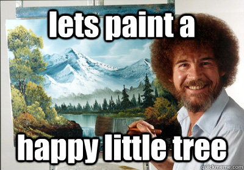
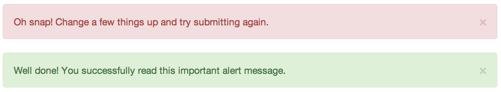
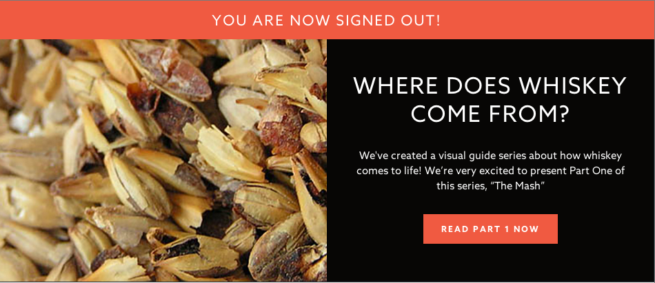
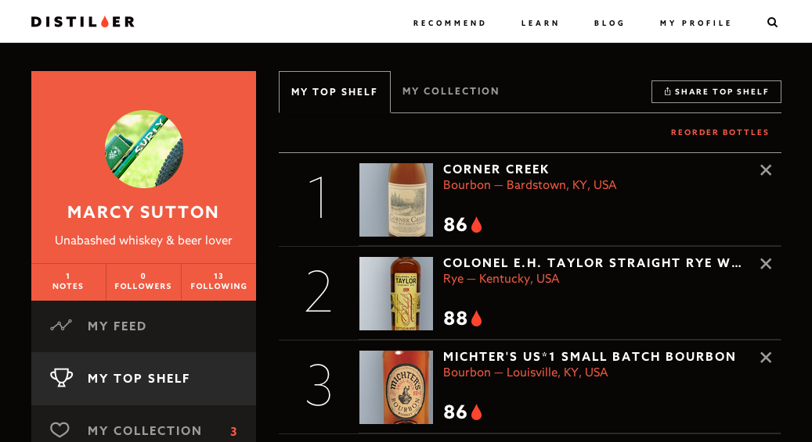

#IRL
Banking
Education
Project
Tracking Payments Travel Fitness Tracking Drinking
Tracking Payments Travel Fitness Tracking Drinking
ARIA was made for this.
Accessibility of JavaScript MV*s
Created by Marcy Sutton / @marcysutton
Best framework?
Calm down.
Take your pick

Model
View
Controller
Router
*
WHATEVER
Are your views accessible?
It depends on:
- The framework
- Screen reader
- Browser
- Your shitty(?) code
POUR me a beer
- Perceivable
- Operable
- Understandable
- Robust
What does that mean?
It means your stuff should be AWESOME.
Accessibility challenges
in single-page apps
- Interactivity
- Update notification
- Focus management
- *Graceful degradation
Interactivity
Accepting and responding to input from people

Not Understandable
Or Operable
<div class="hamburger-button"></div>
Actually, this fails all 4 POUR principles.
Understandable
<button aria-label="Menu"><button>
<div role="button" tabIndex="0" aria-label="Menu"></div>
Not Operable
// AngularJS
<div ng-click="oneTwoThree(go);" tabIndex="0">JOUST!</div>
JOUST!
Photo: geneandtonic.blogspot.com
Operable
// AngularJS
<div role="button" tabIndex="0"
ng-click="oneTwoThree(go)"
ng-keypress="oneTwoThree(go)">
JOUST!
</div>
Photo: Joshua Trujilo, Seattle PI
Visual Feedback

Visual Feedback
for realsies
a {
color: $linkColor;
&:hover, &:focus {
color: $linkActiveColor;
}
}
JavaScript
(can be)
required.*
*With a warning message.
"As rendered"
Custom Elements
// EmberJS Component
{{gold-hotpants}}
App.GoldHotpantsComponent = Ember.Component.extend({
attributeBindings: [
'tabIndex'
],
tagName: 'section',
tabIndex: function() {
return this.get('active') ? 0 : -1;
}.property('active')
});
Tom Dale, Ceator of Ember.js and Wearer of Gold Shorts
Ember Custom Component demo
ARIA Core Components
Roles
What does this thing do
<form role="search">States
The current condition of this particular thing
<input aria-disabled="true">Properties
<input aria-required="true">ARIA Roles OMG SO MANY
alert- A message with important, and usually time-sensitive, information. See related alertdialog and status.
alertdialog- A type of dialog that contains an alert message, where initial focus goes to an element within the dialog. See related alert and dialog.
application- A region declared as a web application, as opposed to a web document.
article- A section of a page that consists of a composition that forms an independent part of a document, page, or site.
banner- A region that contains mostly site-oriented content, rather than page-specific content.
button- An input that allows for user-triggered actions when clicked or pressed. See related link.
checkbox- A checkable input that has three possible values: true, false, or mixed.
columnheader- A cell containing header information for a column.
combobox- A presentation of a select; usually similar to a textbox where users can type ahead to select an option, or type to enter arbitrary text as a new item in the list. See related listbox.
command- A form of widget that performs an action but does not receive input data.
complementary- A supporting section of the document, designed to be complementary to the main content at a similar level in the DOM hierarchy, but remains meaningful when separated from the main content.
composite- A widget that may contain navigable descendants or owned children.
contentinfo- A large perceivable region that contains information about the parent document.
definition- A definition of a term or concept.
dialog- A dialog is an application window that is designed to interrupt the current processing of an application in order to prompt the user to enter information or require a response. See related alertdialog.
directory- A list of references to members of a group, such as a static table of contents.
document- A region containing related information that is declared as document content, as opposed to a web application.
form- A landmark region that contains a collection of items and objects that, as a whole, combine to create a form. See related search.
grid- A grid is an interactive control which contains cells of tabular data arranged in rows and columns, like a table.
gridcell- A cell in a grid or treegrid.
group- A set of user interface objects which are not intended to be included in a page summary or table of contents by assistive technologies.
heading- A heading for a section of the page.
img- A container for a collection of elements that form an image.
input- A generic type of widget that allows user input.
landmark- A region of the page intended as a navigational landmark.
link- An interactive reference to an internal or external resource that, when activated, causes the user agent to navigate to that resource. See related button.
list- A group of non-interactive list items. See related listbox.
listbox- A widget that allows the user to select one or more items from a list of choices. See related combobox and list.
listitem- A single item in a list or directory.
log- A type of live region where new information is added in meaningful order and old information may disappear. See related marquee.
main- The main content of a document.
marquee- A type of live region where non-essential information changes frequently. See related log.
math- Content that represents a mathematical expression.
menu- A type of widget that offers a list of choices to the user.
menubar- A presentation of menu that usually remains visible and is usually presented horizontally.
menuitem- An option in a set of choices contained by a menu or menubar.
menuitemcheckbox- A menuitem with a checkable state whose possible values are true, false, or mixed.
menuitemradio- A checkable menuitem in a set of elements with role menuitemradio, only one of which can be checked at a time.
navigation- A collection of navigational elements (usually links) for navigating the document or related documents.
note- A section whose content is parenthetic or ancillary to the main content of the resource.
option- A selectable item in a select list.
presentation- An element whose implicit native role semantics will not be mapped to the accessibility API.
progressbar- An element that displays the progress status for tasks that take a long time.
radio- A checkable input in a group of radio roles, only one of which can be checked at a time.
radiogroup- A group of radio buttons.
range- An input representing a range of values that can be set by the user.
region- A large perceivable section of a web page or document, that is important enough to be included in a page summary or table of contents, for example, an area of the page containing live sporting event statistics.
roletype- The base role from which all other roles in this taxonomy inherit.
row- A row of cells in a grid.
rowgroup- A group containing one or more row elements in a grid.
rowheader- A cell containing header information for a row in a grid.
scrollbar- A graphical object that controls the scrolling of content within a viewing area, regardless of whether the content is fully displayed within the viewing area.
search- A landmark region that contains a collection of items and objects that, as a whole, combine to create a search facility. See related form.
section- A renderable structural containment unit in a document or application.
sectionhead- A structure that labels or summarizes the topic of its related section.
select- A form widget that allows the user to make selections from a set of choices.
separator- A divider that separates and distinguishes sections of content or groups of menuitems.
slider- A user input where the user selects a value from within a given range.
spinbutton- A form of range that expects the user to select from among discrete choices.
status- A container whose content is advisory information for the user but is not important enough to justify an alert, often but not necessarily presented as a status bar. See related alert.
structure- A document structural element.
tab- A grouping label providing a mechanism for selecting the tab content that is to be rendered to the user.
tablist- A list of tab elements, which are references to tabpanel elements.
tabpanel- A container for the resources associated with a tab, where each tab is contained in a tablist.
textbox- Input that allows free-form text as its value.
timer- A type of live region containing a numerical counter which indicates an amount of elapsed time from a start point, or the time remaining until an end point.
toolbar- A collection of commonly used function buttons or controls represented in compact visual form.
tooltip- A contextual popup that displays a description for an element.
tree- A type of list that may contain sub-level nested groups that can be collapsed and expanded.
treegrid- A grid whose rows can be expanded and collapsed in the same manner as for a tree.
treeitem- An option item of a tree. This is an element within a tree that may be expanded or collapsed if it contains a sub-level group of treeitem elements.
widget- An interactive component of a graphical user interface (GUI).
window- A browser or application window.
Using Roles
- They're element types
- They're landmarks
- Start with native HTML tags
- Read the documentation
- Don't overdo it
Application Mode
Disables a screen reader’s “virtual cursor”
<dance-detector role="application"></dance-detector>
Headache City
<body role="application">
OH NO YOU DIDN’T
Update Notification
Remember this?

Webapp Alerts
 ARIA Live Regions
Notification of updates without the user losing focus
Live Regions
class App.FlashMessageController
constructor: ->
@container = $('.flash-message')
App.bind 'flashMessage', (e) =>
@flashMessage(e.message)
flashMessage: (message) ->
@container.append("")
<div class="flash-message" aria-live="assertive" role="alert"></div>
Distiller
(They're hiring devs!)
Focus Management
“freak-out” mode
Managing focus
class App.FocusManager
constructor: ->
$('body').on 'focusin', (e) =>
@oldFocus = $(e.target)
App.bind 'rendered', (e) =>
return unless @oldFocus
@_focusById() if @oldFocus.data('focus-id')
_focusById: ->
focusId = @oldFocus.data('focus-id')
newFocus = $("[data-focus-id=#{focusId}]")
MyApp.focus(newFocus) if newFocus
Perceivable

Operable
Understandable
Robust
You got this.
- Interactivity
- Update notification
- Focus management
Make it awesome.
Thanks, CascadiaJS!
@marcysutton